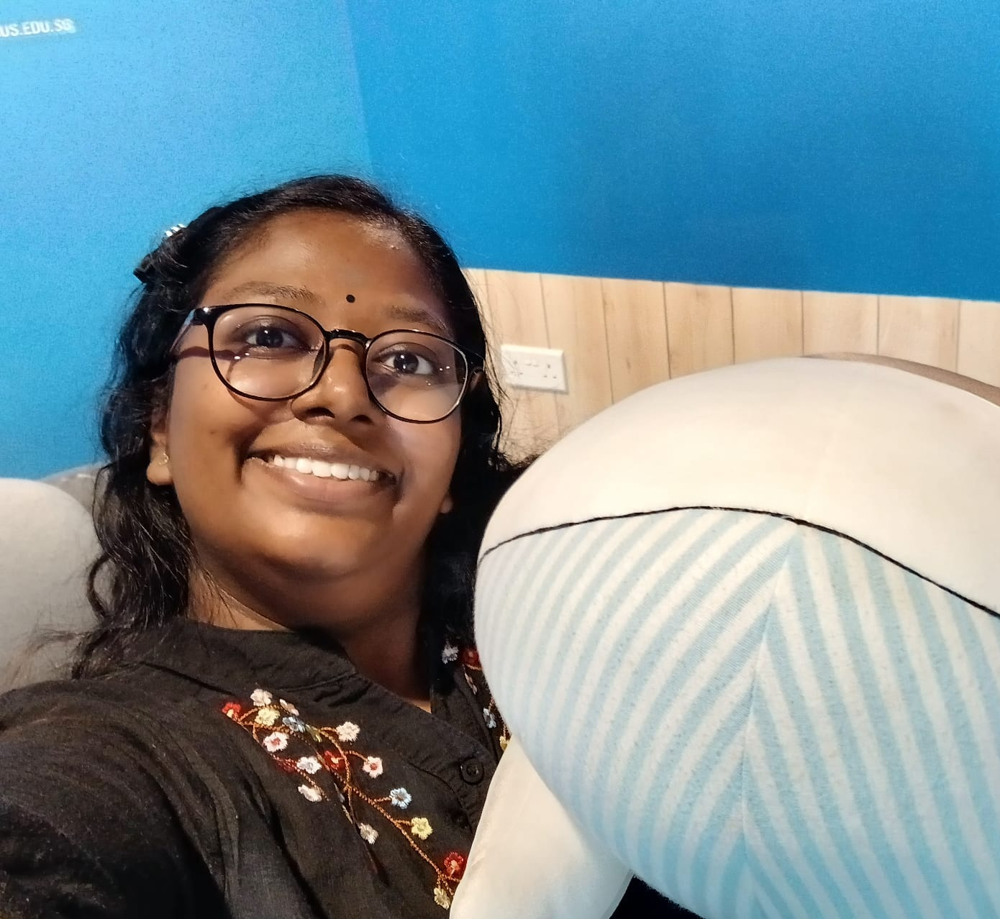
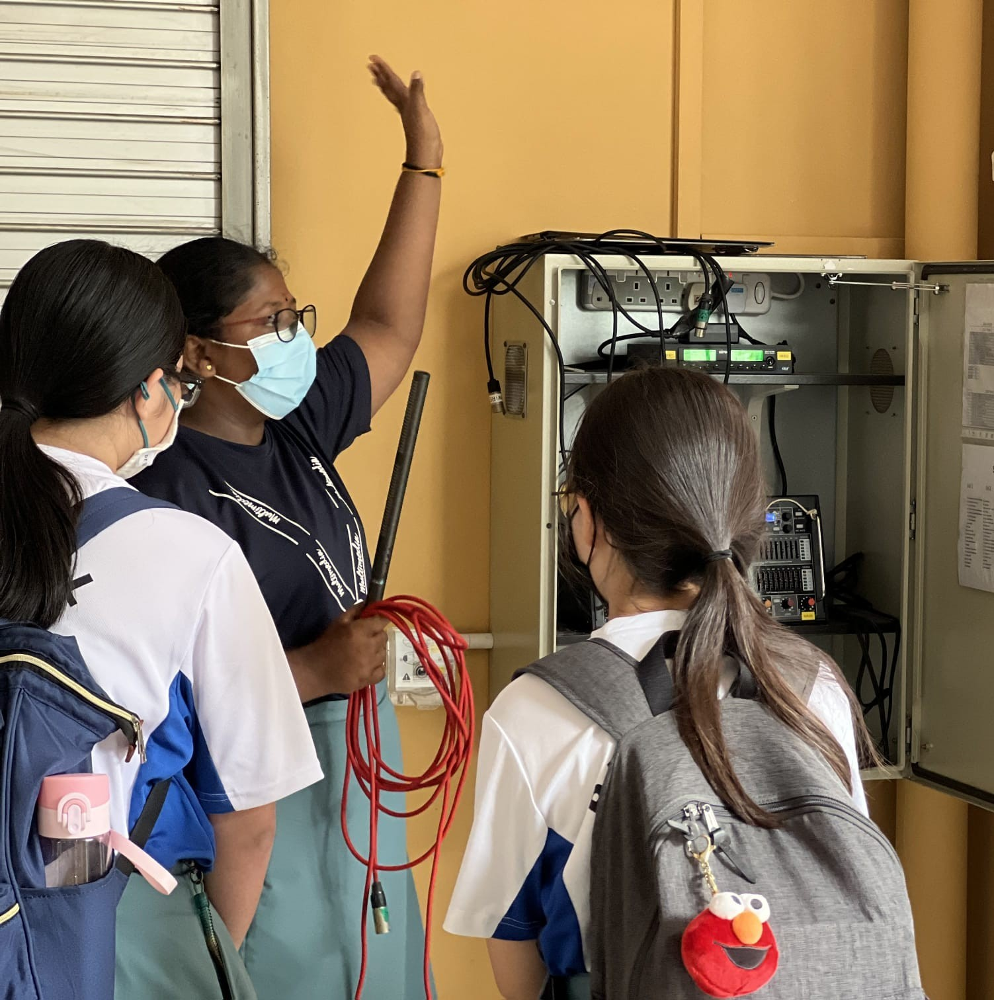
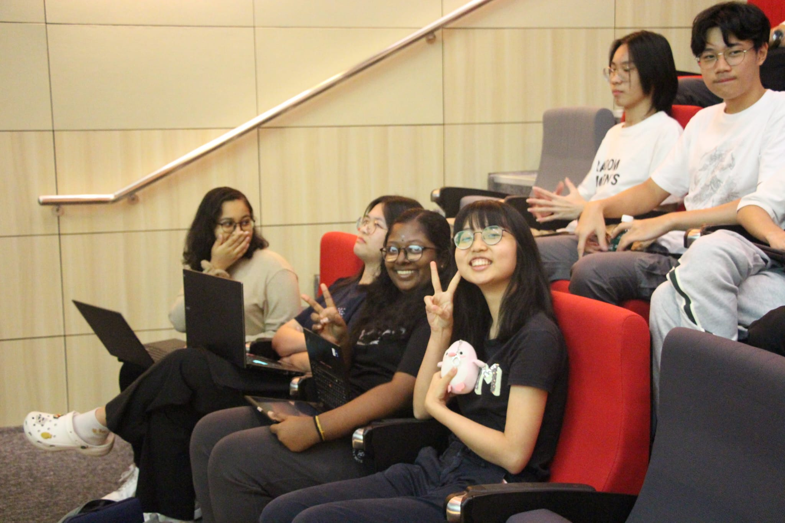
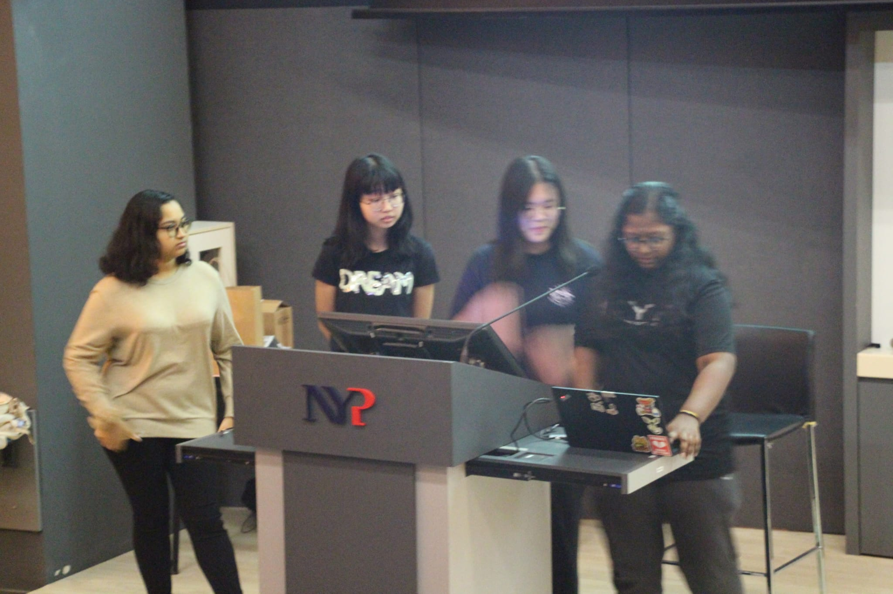
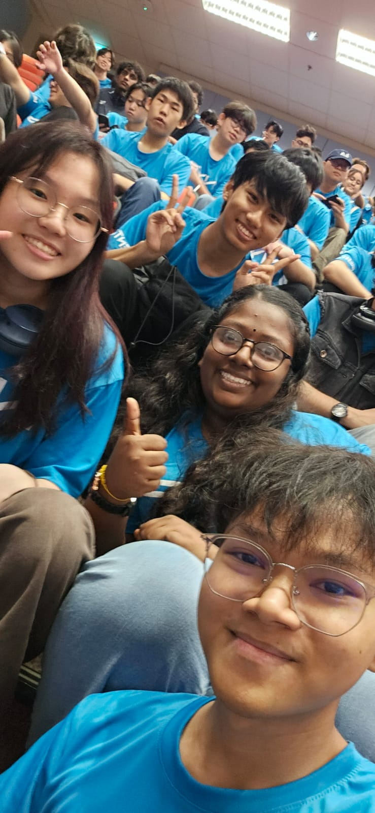
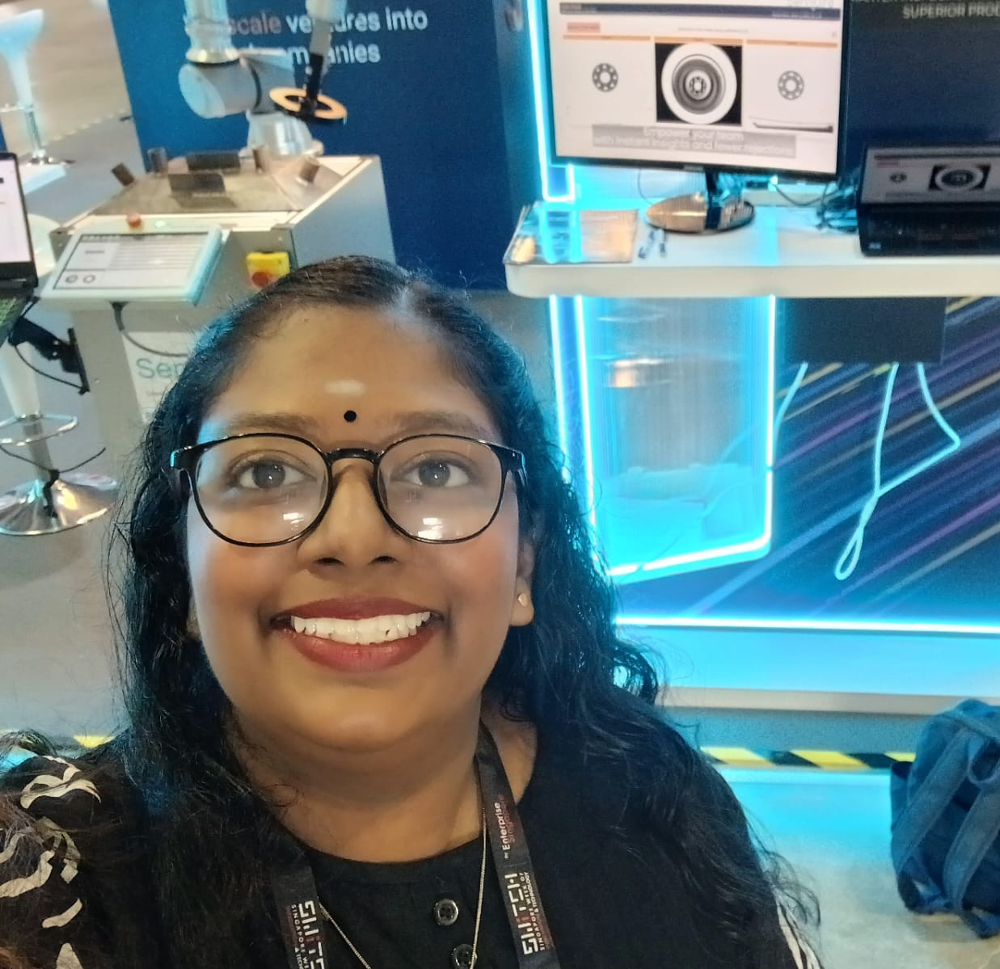
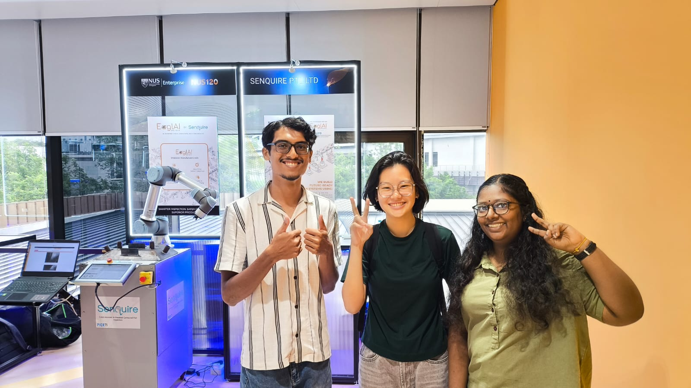

A passionate developer focused on Computer Vision, Optimization & Real-World Deployment of AI Systems. I am currently a Final Year Student @ Nanyang Polytechnic, pursuing the course AI & Data Engineering. Join me on this portfolio journey, so that you can know more about me and what I did!

I'm Yoshana Magendran, a final-year student pursuing a Diploma in AI and Data Engineering at Nanyang Polytechnic. As an aspiring engineer, I am eager to explore the dynamic field of Artificial Intelligence, with hands-on experience in computer vision, model optimization, and deployment-ready AI systems.
Through internships, exhibitions, and technical projects, I've contributed to real-world applications in object detection, robotics, and intelligent automation. I'm particularly passionate about bridging research and production-designing AI solutions that are accurate, efficient, scalable, and practical. I thrive as a quick learner under guidance, an active listener, and a proactive team player with proven leadership experience.
2023-2026
CCA: School of Engineering (SEG) Club
Active Member of Club. Contributed as a Freshmen Orientation Student Mentor (2025), Innovation & Enterprise (I&E) Student Champion, and camp facilitator, supporting student engagement and leadership initiatives.
2019-2022
CCA: Audio Visual Aid (AVA) Club
Served as the 2021'22 President of the AVA Club, leading event logistics and technical coordination. Also appointed as Senior Student Counsellor, supporting peer mentorship and student engagement initiatives.
8 September 2025 - 20 February 2026
Contributed to the optimization and enhancement of production AI systems, focusing on computer vision workflows and object detection models. Improved production model inference efficiency through benchmarking and optimization techniques, supporting scalable deployment workflows. Gained hands-on experience in deep learning, performance evaluation, and real-world AI system development, strengthening my ability to balance accuracy, efficiency, and practical implementation.
28 - 31 October 2025
Represented the company at SWITCH, demonstrating AI-powered computer vision solutions to industry stakeholders and engaging with potential clients.
16 September 2025
Showcased AI systems and supported live product demonstrations, gaining experience in presenting technical solutions to industry professionals.
2 - 6 September 2024
Collaborated in a team to develop a web-based budgeting application using Flask, Jinja, and Git-based version control. Gained hands-on experience in rapid prototyping and pitching technical solutions to judges.
Built a deep learning-based system to classify real and AI-generated images by analyzing subtle visual and frequency patterns. Deployed using Kubernetes to ensure scalability and high availability for reliable authenticity verification.
Developed an end-to-end machine learning pipeline using Python and Kedro, structuring the workflow from data cleaning and feature engineering to model training and evaluation. Worked with a relational database using SQLite to extract and process data, ensuring modular, reproducible, and well-documented pipeline development.
Designed a Slice-and-Stitch inference system to enable lightweight object detection models to process ultra high-resolution industrial images without GPU memory overflow. Preserves microscopic defect details through patch-based processing and panoramic reconstruction.
Developed an autonomous hybrid vehicle capable of operating on both land and water for coastal safety and security patrol. Integrates intelligent detection, surveillance systems, and wireless connectivity for real-time monitoring and emergency response.
Develop a sustainable, portable vertical farming system that maximizes sunlight exposure, minimizes energy consumption, and allows efficient crop growth in limited spaces.
Led the development of an elderly health monitoring system. Integrated various sensors and created an online dashboard to visualize real-time data for tracking activity and environment.
Tamil Language - Secondary School
2019, 2020
Punggol Secondary School
2021, 2022
Punggol Secondary School
2021, 2022
Participation
2019, 2021






Thank you for visiting my portfolio! I'm always open to discussing new projects, creative ideas, or opportunities to be part of your visions.
Feel free to reach out to me directly.